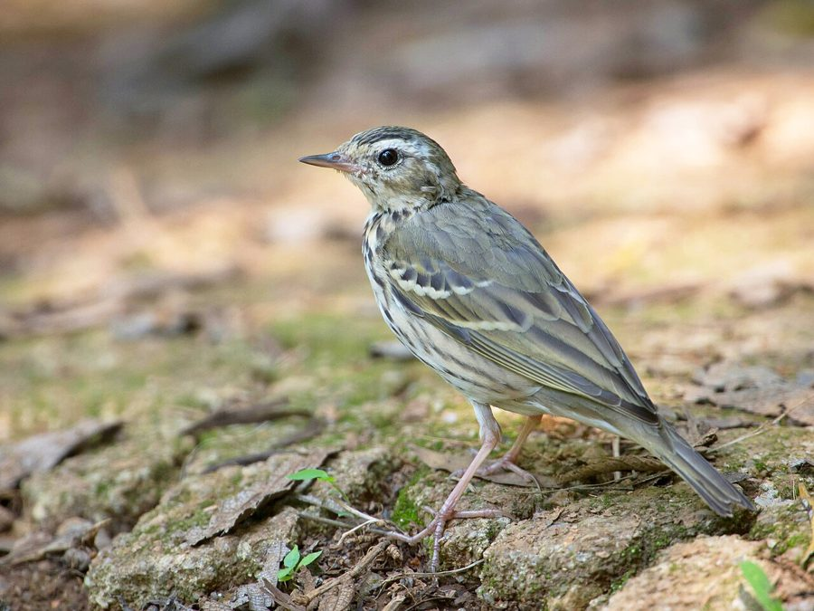

ऑलिव-बैक्ड पिपिटOlive-backed Pipit
Anthus hodgsoni · Motacillidae · BRD-0206

- Scientific name वैज्ञानिक नाम
- Anthus hodgsoni Richmond, 1907
- Family कुल
- Motacillidae
- Hindi हिंदी
- ऑलिव-बैक्ड पिपिट
- Local names स्थानीय नाम
- olive-backed pipit, olive backed pipit, pipit
- Status here यहाँ की स्थिति
- native
- Movement आवागमन
- Winter visitor
- Known from कहाँ दर्ज
- Others have published records from the Basti–Ayodhya districts बस्ती–अयोध्या के ज़िलों से दूसरों के प्रकाशित अभिलेख
- IUCN IUCN
- LC
- Review समीक्षा
- audited and independently read
When to look कब देखें
Winter visitor शीतकालीन प्रवासी. Expected mainly in September, October, November, December, January, February, March, April, May. मुख्यतः सितंबर, अक्टूबर, नवंबर, दिसंबर, जनवरी, फ़रवरी, मार्च, अप्रैल, मई में अपेक्षित।
Arrives in September–October from breeding grounds in the Himalayas and Central Asia; departs by April–May. Expected in grasslands and cultivated areas across eastern UP. Recorded at Parvati Arga Bird Sanctuary. All migrants and visitors →
Uses and possibilities उपयोग और संभावनाएँ
Drawn from the documented uses in the profile below, where each is labelled traditional, current or a research lead. All uses →
Tell it apart from इनसे अलग पहचानें
ऑलिव-बैक्ड पिपिट / Olive-backed Pipit
Anthus hodgsoni Richmond, 1907 — Motacillidae
ऑलिव-बैक्ड पिपिट — हिमालय से सर्दियों में आने वाली छोटी, पतली चिड़िया। इसकी जैतूनी-भूरी पीठ, धारीदार स्तन और लंबी पूंछ इसे पहचान देती हैं। पूर्वी उत्तर प्रदेश के मैदानों और खेतों में सितंबर से मई तक पाई जाती है। जमीन पर दौड़ते हुए कीड़े खोजती है।
Quick Identification त्वरित पहचान
| Feature | Description |
|---|---|
| Size | Small pipit; 16–17 cm long |
| Build | Slender, upright posture |
| Plumage | Olive-brown back; streaked breast and flanks |
| Head | Pale supercilium; dark ear-covert |
| Underparts | White with brown streaking on breast and flanks |
| Tail | Long; dark with white outer edges |
| Bill | Fine, pointed; insectivore's bill |
| Legs | Pale pinkish |
Field tip: A small, slender, pale pipit with an olive-brown back, seen running on the ground in grasslands and stubble fields. The pale supercilium and streaked underparts are diagnostic. Often seen in pairs or small flocks.
हिंदी — कैसे पहचानें:
छोटी, पतली चिड़िया।
जैतूनी-भूरी पीठ।
धारीदार छाती।
जमीन पर दौड़ता है।
Morphology आकारिकी
Biometrics:
| Measurement | Range |
|---|---|
| Total length | 160–170 mm |
| Wing | 85–95 mm |
| Tail | 75–85 mm |
| Bill | 11–13 mm |
| Tarsus | 22–25 mm |
| Weight | 18–24 g |
Size: 16–17 cm long; wingspan 25–27 cm.
Plumage: Olive-brown to grey-brown above, including crown. Supercilium pale buff, prominent. Ear-coverts dark. Throat white. Breast and flanks heavily streaked brown. Underparts white. Tail dark brown with white outer feathers and tips.
Sexual dimorphism: Minimal.
Head: Prominent pale supercilium; dark loral area.
Bill: Fine, pointed, slightly decurved; adapted for picking small insects.
Legs and feet: Pale pinkish; slender.
Juveniles: Similar to adults but with more prominent streaking.
Vocalisations. Call repertoire:
- Contact call: A thin, high-pitched tsip or tsee, given in flight and between individuals.
- Alarm call: Repeated chip-chip-chip.
- Song: Not typically heard on wintering grounds; breeding ground song is a simple warble.
हिंदी: कोमल "त्सिप" या "त्सी" आवाज़। अलर्ट होने पर "चिप-चिप" कहता है।
Behaviour & Ecology व्यवहार और पारिस्थितिकी
Ground forager: Olive-backed Pipit forages primarily on the ground, walking and running through grass and stubble. It feeds on:
- Small insects and spiders
- Small flies and gnats
- Small beetles and bugs
- Occasionally small seeds
Foraging: Walks on ground, gleaning insects from vegetation and soil. Sometimes makes short sallies to catch flying insects.
Social behaviour: Often solitary or in pairs; sometimes loose flocks during migration periods.
Roost behaviour: Roosts on the ground or in low vegetation.
Predators: Shrike, hooded crows, occasionally small raptors.
Habitat preference: Primarily grasslands and open areas; avoids dense vegetation.
हिंदी: अकेला या जोड़ों में रहता है। जमीन पर कीड़े खोजता है। खुली जगहों में रहना पसंद करता है।
Life Cycle / Phenology जीवन चक्र
| Month | Event |
|---|---|
| January–February | Peak presence in eastern UP; feeding |
| March–April | Spring passage; gradual departure northward |
| May–June | Breeding in Himalayas; absent from eastern UP |
| July–August | Post-breeding dispersal |
| September–October | Autumn arrival of winter visitors; establishment |
| November–December | Winter residents; territorial behaviour |
Breeding: Does not breed in eastern UP; breeds in the Himalayas and Central Asia. Nest cup-shaped, placed on ground or in low vegetation. Clutch typically 3–4 eggs.
Moult: Prebasic moult occurs before arrival at wintering grounds (July–September).
Site fidelity: Some individuals show philopatry to particular wintering areas.
हिंदी: सितंबर में आता है, अप्रैल तक रहता है। हिमालय में प्रजनन करता है। सर्दियों में मैदानों में। मई तक सभी चले जाते हैं।
Host Plants or Prey आहार
| Food Type | Examples | Feeding Behaviour |
|---|---|---|
| Small insects | Flies, gnats, small beetles | Gleaned from ground and vegetation |
| Spiders | Small spiders | Picked from grass |
| Small bugs | Bugs and small homopterans | Ground foraging |
| Occasionally seeds | Grass and weed seeds | Minor component, mainly insects |
हिंदी: छोटे कीड़े और मकड़ियाँ खाता है। घास से कीड़े चुनता है। दाने कम खाता है।
Predators / Natural Enemies शत्रु
- Avian predators: Brown Shrike, Hooded Crow, possibly small raptors
- Mammalian predators: Small snakes, mongooses
- Parasites: Feather mites and parasitic lice
हिंदी: बड़ी शिकारी चिड़ियाँ इसका शिकार कर सकती हैं।
Agricultural / Human Relevance कृषि प्रासंगिकता
Protected species: The Olive-backed Pipit is protected under the Wildlife (Protection) Act 1972. Hunting is prohibited in India.
Pest control: Feeds on small insects, including agricultural pests like flies and small bugs, contributing minor pest control.
Field indicator: Its presence in winter indicates healthy, open grassland and cultivated habitats with good insect populations.
Cultural relevance: Known to local bird enthusiasts and ornithologists as a winter visitor.
Conservation status: Populations appear stable; no major threats identified.
हिंदी: यह विधि अधिनियम 1972 के तहत संरक्षित है। इसका शिकार करना कानूनी रूप से निषिद्ध है।
Expected Locally स्थानीय रूप से अपेक्षित
Not a field record. Written from published accounts for eastern Uttar Pradesh. No confirmed local sighting yet — if you have seen it, that is what the atlas needs.
अभी तक स्थानीय पुष्टि नहीं। यह विवरण प्रकाशित स्रोतों से है, किसी अवलोकन से नहीं।
Winter range: Expected in eastern UP from September to May in grasslands, stubble fields, and open cultivated areas. GBIF holds published records from the wider Awadh–Purvanchal plain.
Habitat preference: Open grasslands, cultivated fields with short vegetation, and field margins. Avoids dense cover.
Peak season: December–February, when numbers are highest from Himalayan populations.
Detection: Often first noted by its flight calls when disturbed; early morning and late evening are best for observation.
What a first record would be: A dated photograph or detailed observation of the bird in eastern UP submitted through the About page, with location and date.
हिंदी: घास के मैदानों और कटी हुई फसलों वाली जगहों पर सर्दियों में अपेक्षित। पार्वती अर्गा में देखी गई है। हिमालय से सितंबर में आता है।
Distribution वितरण
Global range: Breeds in the Himalayas and Central Asia; winters across the Indian subcontinent and South-East Asia.
In India: Widespread winter visitor across northern and central India; rare in southern peninsular regions.
In Uttar Pradesh: Winter visitor throughout the state in suitable grassland habitats; more common in eastern districts.
In Basti district / eastern UP: Expected as a winter visitor in grasslands and cultivated areas; extent of presence needs confirmation.
Research Questions शोध प्रश्न
- What is the detailed wintering range of Olive-backed Pipit in eastern UP, and does it overlap with other pipit species?
- How do agricultural practices (stubble burning vs. retention) affect winter survival and habitat use?
- What is the diet composition during the winter season compared with breeding grounds?
- सर्दियों में इस चिड़िया की संख्या में वार्षिक भिन्नता क्या है?
- How does this species compete with resident grassland birds for food resources? (A child can observe and count pipits in different habitat types.)
- क्या यह प्रजाति अन्य पिपिट प्रजातियों के साथ मिश्रित झुंड में दिखाई देती है?
Similar Species मिलती-जुलती प्रजातियाँ
| Species | Key Difference | Hindi | Field Rule | |
|---|---|---|---|---|
| [[tree_pipit\ | Tree Pipit]] (Anthus trivialis) | Longer tail; different head pattern; more buffy underparts | पेड़ की पिपित | Tree Pipit is slightly larger with a longer tail and different call. |
| Richard's Pipit (Anthus richardi) | Much larger; different habitat (desert margins) | बड़ी पिपित | Much larger and different appearance. | |
| [[grey_wagtail\ | Grey Wagtail]] (Motacilla cinerea) | Larger; longer tail; yellow underparts (breeding) | ग्रे खंजन | Wagtail is larger and a water specialist; pipit is smaller and grassland bird. |
Field rule: The Olive-backed Pipit is a small, slender, pale pipit with an olive-brown back and pale supercilium. It is found in grasslands and open areas. If the bird is larger with a longer tail or more buffy coloration, it may be Tree Pipit.
Taxonomy & Classification वर्गीकरण
Original description. The species was described by Richmond in 1907. The type locality is the Himalayas.
Subspecies. Monotypic or very weakly differentiated; A. h. hodgsoni is the recognized subspecies.
Family and order placement. Order Passeriformes; family Motacillidae (pipits and wagtails). The genus Anthus contains many species of ground-dwelling pipits.
Phylogenetic notes. Closely related to other Asian Anthus species, particularly Tree Pipit with which it sometimes co-occurs in winter.
IUCN status rationale. Assessed as Least Concern (LC) globally. Populations are stable and widespread across its range. The species is adaptable to various grassland habitats. In India, it is protected under the Wildlife Protection Act 1972.
हिंदी: हिमालय और मध्य एशिया में बसता है। सर्दियों में भारत में आता है। कानून से पूरी तरह सुरक्षित है।
Photo Gallery फोटो गैलरी
No photos yet — add field photos to media/species/olive_backed_pipit/ and run node scripts/sync_photos.js.
Wanted photos:
- Adult on ground
- In flight
- Close-up showing head pattern
- Foraging behaviour
- Winter habitat
References संदर्भ
- Richmond, C. W. (1907). On the types of some birds described by Hodgson. Proceedings of the Biological Society of Washington, 20: 113–116.
- Ali, S. & Ripley, S. D. (1973). Handbook of the Birds of India and Pakistan. Vol. 9 (Warblers to Redstarts). Oxford University Press, Delhi. Pp. 210–213.
- Cramp, S. (ed.) (1988). Handbook of the Birds of Europe, the Middle East and North Africa: The Birds of the Western Palearctic. Vol. V (Tyrant Flycatchers to Thrushes). Oxford University Press. Pp. 244–249.
- Rasmussen, P. C. & Anderton, J. C. (2005). Birds of South Asia: The Ripley Guide. Smithsonian Institution, Washington, D.C. Pp. 416–417.
- GBIF Occurrence Data — Anthus hodgsoni, India.
- IUCN Red List (2024). Anthus hodgsoni — BirdLife International assessment. IUCN, Cambridge. Status: Least Concern.
Source file: species/fauna/birds/olive_backed_pipit.md